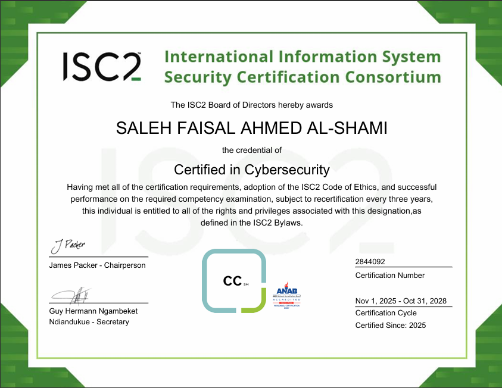
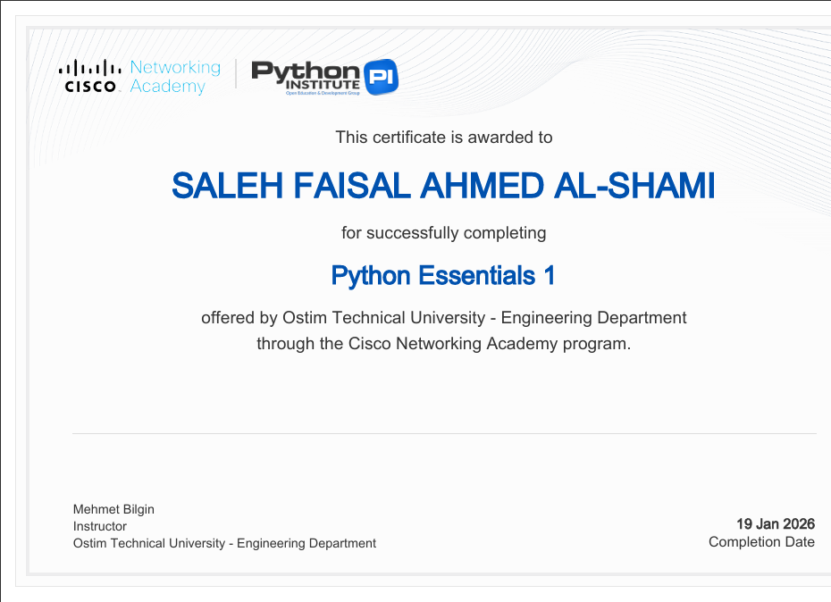
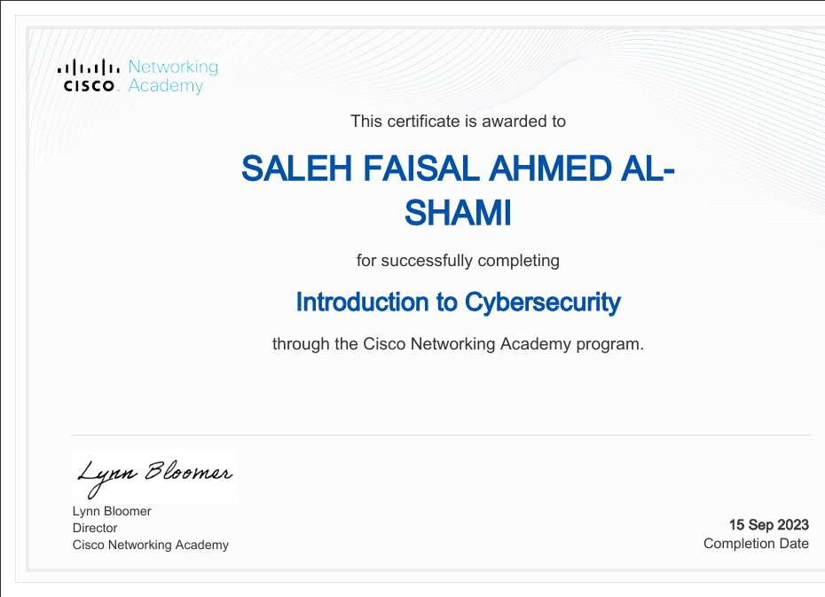
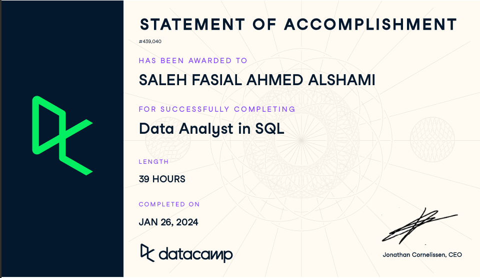
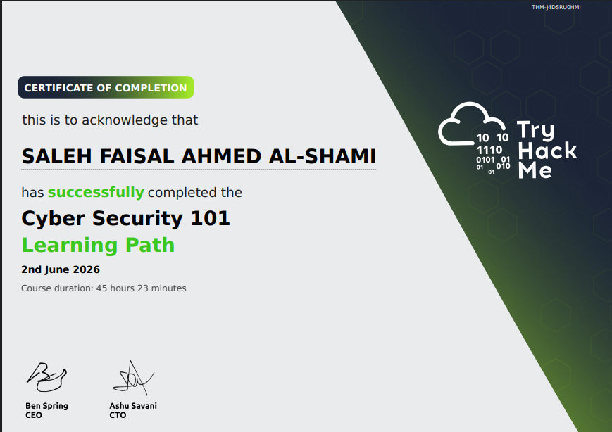
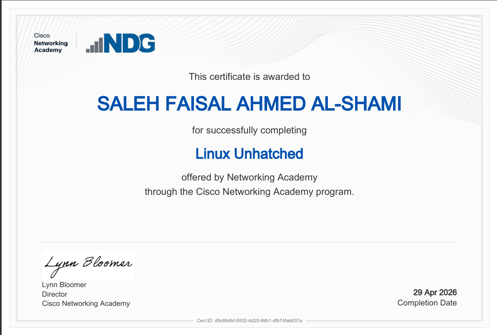
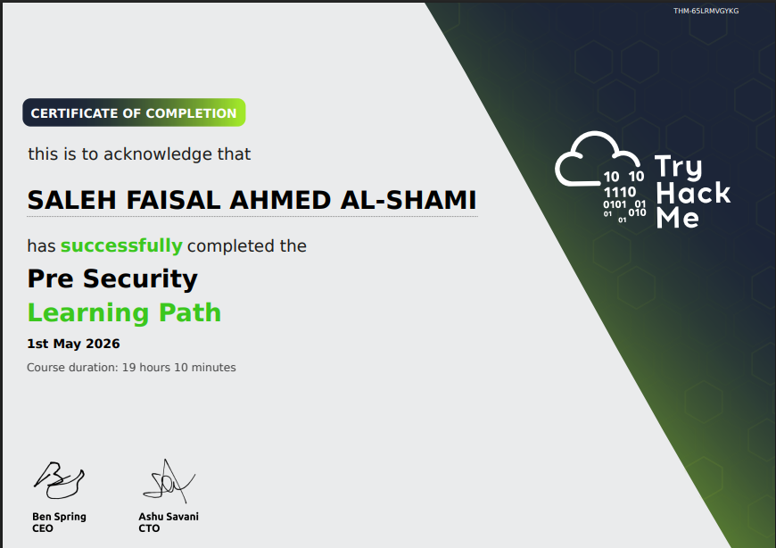

05. Certifications

ISC2 CC
Certified in Cybersecurity
2024
Cisco Ethical Hacker
Cisco Networking Academy
Jun 2025
Cisco Python Essentials 1
Python Institute
Jan 2026
Intro to Cybersecurity
Cisco Networking Academy
Sep 2023
Data Scientist in Python
DataCamp · 26 hours
Jul 2024
Data Analyst in SQL
DataCamp · 39 hours
Jan 2024
Cyber Security 101
TryHackMe Learning Path
Jun 2026
Linux Unhatched
Cisco Networking Academy
Apr 2026
Pre Security
TryHackMe Learning Path
Jun 2026